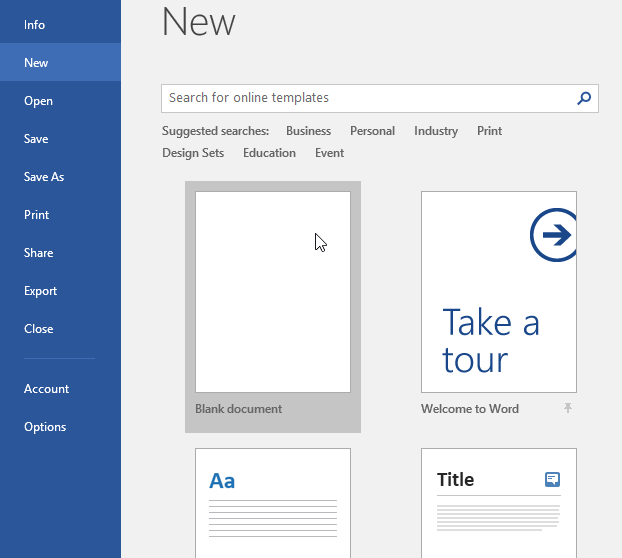
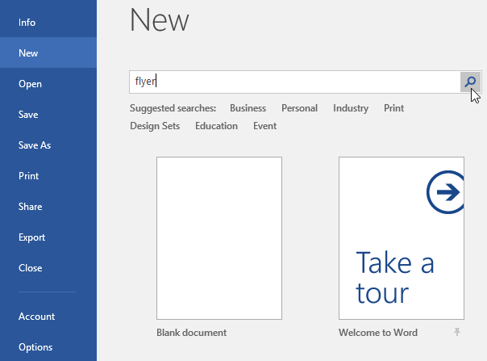
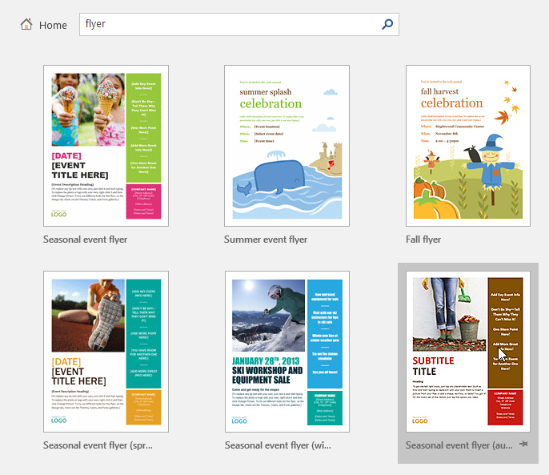
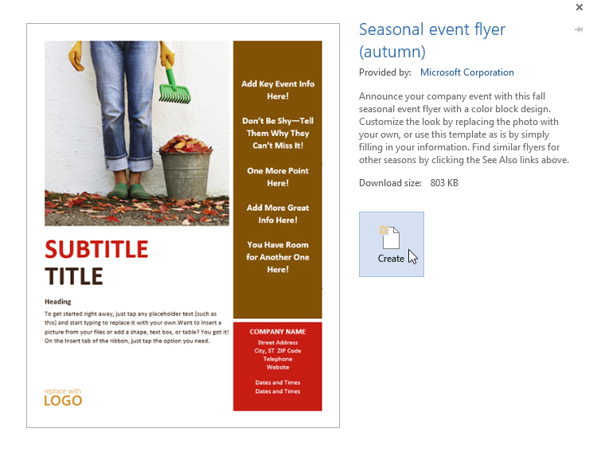
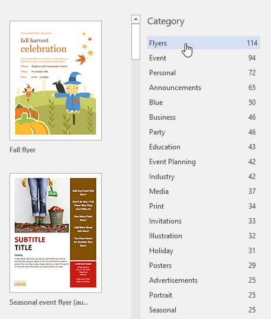
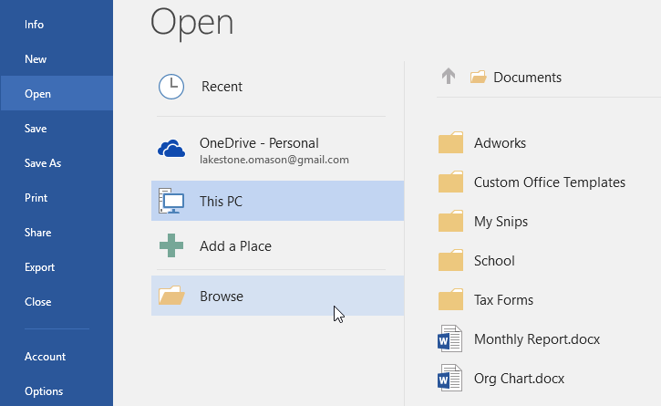
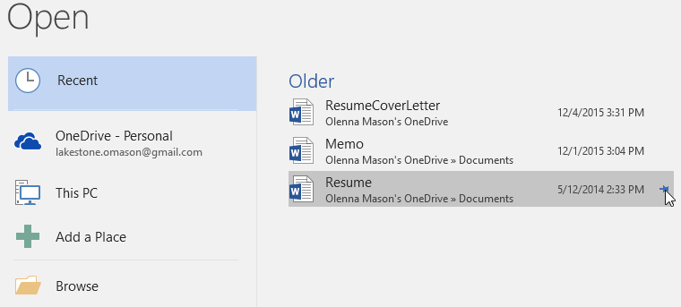
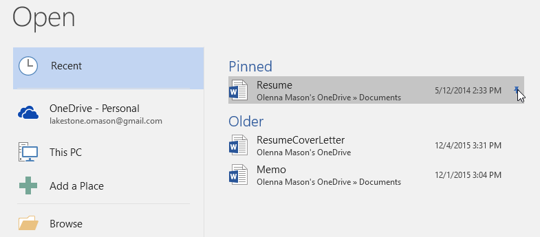

Introducere
Fișierele Word se numesc documente. Ori de câte ori începeți un nou proiect în Word, va trebui să creați un nou document, care poate fi fie gol, fie dintr-un șablon. De asemenea, va trebui să știți cum să deschideți un document existent.
Pentru a crea un nou document gol:Când începeți un nou proiect în Word, veți dori adesea să începeți cu un nou document gol.
- Selectați fila Fișier pentru a accesa vizualizarea Backstage.
- Selectați Nou, apoi faceți clic pe Document gol.
- Va apărea un nou document gol.


Un șablon este un document prestabilit pe care îl puteți utiliza pentru a crea rapid un nou document. Șabloanele includ adesea formatare și design personalizate, astfel încât vă pot economisi mult timp și efort atunci când începeți un nou proiect.
- Faceți clic pe fila Fișier pentru a accesa vizualizarea Backstage, apoi selectați Nou.
- Mai multe șabloane vor apărea sub opțiunea Document necompletat. De asemenea, puteți utiliza bara de căutare pentru a găsi ceva mai specific. În exemplul nostru, vom căuta un șablon de fluturaș.
- Când găsiți ceva care vă place, selectați un șablon pentru a-l previzualiza.
- Va apărea o previzualizare a șablonului. Faceți clic pe Creare pentru a utiliza șablonul selectat.
- Va apărea un nou document cu șablonul selectat.




Pe lângă crearea de documente noi, va trebui adesea să deschideți un document care a fost salvat anterior.
- Navigați la vizualizarea Backstage, apoi faceți clic pe Deschidere.
- Selectați Acest computer, apoi faceți clic pe Răsfoire. De asemenea, puteți alege OneDrive pentru a deschide fișierele stocate pe OneDrive.
- Va apărea caseta de dialog Deschidere. Găsiți și selectați documentul, apoi faceți clic pe Deschidere.
- Va apărea documentul selectat.



Dacă lucrați frecvent cu același document, îl puteți fixa în vizualizarea Backstage pentru acces rapid.
- Navigați la vizualizarea Backstage, faceți clic pe Deschidere, apoi selectați Recent.
- Va apărea o listă de documente editate recent. Treceți cu mouse-ul peste documentul pe care doriți să îl fixați, apoi faceți clic pe pictograma ace.
- Documentul va rămâne în lista Documente recente până când nu este fixat. Pentru a anula fixarea unui document, dați clic din nou pe pictograma acelui.

